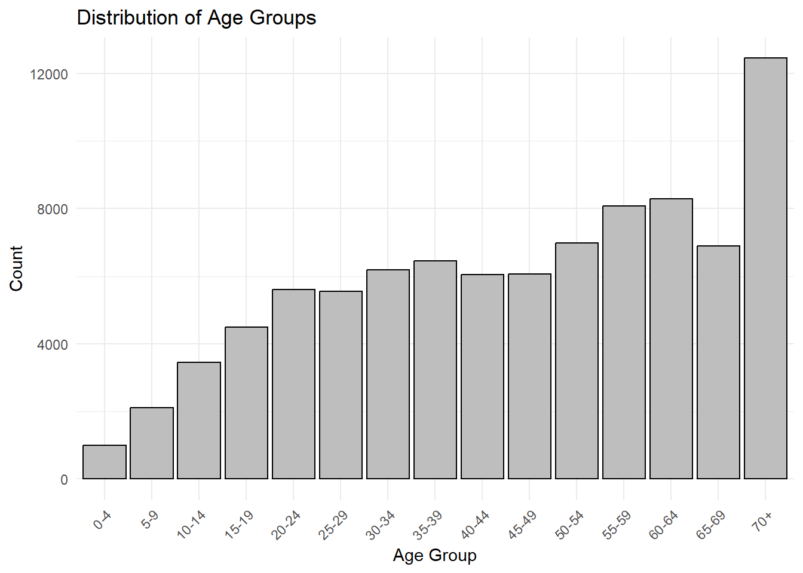

pacman::p_load(tidyverse, plotly, sf, tmap)Data Preparation
1 Getting Started
The following R packages will be required:
tidyverse
plotly
sf
tmap
2 Importing Data
2.1 Importing Dengue Dataset
The code chunk below uses read_csv() of readr to import the dengue_daily dataset into R environment.
dengue_daily <- read_csv("data/Dengue_Daily.csv")summary(dengue_daily) 發病日 個案研判日 通報日
Min. :1998-01-02 Min. :2004-05-16 Min. :1998-01-07
1st Qu.:2014-10-29 1st Qu.:2014-11-28 1st Qu.:2014-10-31
Median :2015-09-29 Median :2015-10-10 Median :2015-10-01
Mean :2016-04-13 Mean :2017-02-27 Mean :2016-04-16
3rd Qu.:2023-07-10 3rd Qu.:2023-08-18 3rd Qu.:2023-07-13
Max. :2025-03-16 Max. :2025-03-16 Max. :2025-03-16
NA's :6279
性別 年齡層 居住縣市 居住鄉鎮
Length:107312 Length:107312 Length:107312 Length:107312
Class :character Class :character Class :character Class :character
Mode :character Mode :character Mode :character Mode :character
居住村里 最小統計區 最小統計區中心點X 最小統計區中心點Y
Length:107312 Length:107312 Min. :118.3 Min. :21.93
Class :character Class :character 1st Qu.:120.2 1st Qu.:22.63
Mode :character Mode :character Median :120.3 Median :22.96
Mean :120.3 Mean :22.91
3rd Qu.:120.3 3rd Qu.:23.00
Max. :122.0 Max. :26.16
NA's :789 NA's :789
一級統計區 二級統計區 感染縣市 感染鄉鎮
Length:107312 Length:107312 Length:107312 Length:107312
Class :character Class :character Class :character Class :character
Mode :character Mode :character Mode :character Mode :character
感染村里 是否境外移入 感染國家 確定病例數
Length:107312 Length:107312 Length:107312 Min. :1
Class :character Class :character Class :character 1st Qu.:1
Mode :character Mode :character Mode :character Median :1
Mean :1
3rd Qu.:1
Max. :2
居住村里代碼 感染村里代碼 血清型 內政部居住縣市代碼
Length:107312 Length:107312 Length:107312 Min. : 63.0
Class :character Class :character Class :character 1st Qu.: 64.0
Mode :character Mode :character Mode :character Median : 67.0
Mean : 546.3
3rd Qu.: 67.0
Max. :10020.0
NA's :476
內政部居住鄉鎮代碼 內政部感染縣市代碼 內政部感染鄉鎮代碼
Min. : 900701 Min. : 63 Min. :1000202
1st Qu.:6400700 1st Qu.: 64 1st Qu.:6400700
Median :6401800 Median : 66 Median :6401600
Mean :6281126 Mean : 359 Mean :6384118
3rd Qu.:6703300 3rd Qu.: 67 3rd Qu.:6703300
Max. :6801200 Max. :10020 Max. :6801000
NA's :476 NA's :19108 NA's :19108 Translating the column names into English will make the dataset more user-friendly:
發病日: Onset Date
個案研判日: Case Classification Date
通報日: Reporting Date
性別: Gender
年齡層: Age Group
居住縣市: Residential County/City
居住鄉鎮: Residential Town/District
居住村里: Residential Village
最小統計區: Smallest Statistical Area
最小統計區中心點X: X-coord
最小統計區中心點Y: Y-coord
一級統計區: Primary Statistical Area
二級統計區: Secondary Statistical Area
感染縣市: Infection County/City
感染鄉鎮: Infection Town/District
感染村里: Infection Village
是否境外移入: Imported Case
感染國家: Infection Country
確定病例數: Confirmed Cases
居住村里代碼: Residential Village Code
感染村里代碼: Infection Village Code
血清型: Serotype
內政部居住縣市代碼: MOI Residential County Code
內政部居住鄉鎮代碼: MOI Residential Town Code
內政部感染縣市代碼: MOI Infection County Code
內政部感染鄉鎮代碼: MOI Infection Town Code
colnames(dengue_daily) <- c("Onset_Date", "Case_Classification_Date", "Reporting_Date", "Gender",
"Age_Group", "Residential_County_City", "Residential_Town_District",
"Residential_Village", "Smallest_Statistical_Area", "X_coord",
"Y_coord", "Primary_Statistical_Area", "Secondary_Statistical_Area",
"Infection_County_City", "Infection_Town_District", "Infection_Village",
"Imported_Case", "Infection_Country", "Confirmed_Cases",
"Residential_Village_Code", "Infection_Village_Code", "Serotype",
"MOI_Residential_County_Code", "MOI_Residential_Town_Code",
"MOI_Infection_County_Code", "MOI_Infection_Town_Code")Checking the column titles:
[1] "Onset_Date" "Case_Classification_Date"
[3] "Reporting_Date" "Gender"
[5] "Age_Group" "Residential_County_City"
[7] "Residential_Town_District" "Residential_Village"
[9] "Smallest_Statistical_Area" "X_coord"
[11] "Y_coord" "Primary_Statistical_Area"
[13] "Secondary_Statistical_Area" "Infection_County_City"
[15] "Infection_Town_District" "Infection_Village"
[17] "Imported_Case" "Infection_Country"
[19] "Confirmed_Cases" "Residential_Village_Code"
[21] "Infection_Village_Code" "Serotype"
[23] "MOI_Residential_County_Code" "MOI_Residential_Town_Code"
[25] "MOI_Infection_County_Code" "MOI_Infection_Town_Code" Translating the Imported_Case and Residential_County_City column values for better usability.
屏東縣: Pingtung County
宜蘭縣: Yilan County
高雄市: Kaohsiung City
桃園市: Taoyuan City
新北市: New Taipei City
台北市: Taipei City
台南市: Tainan City
新竹縣: Hsinchu County
南投縣: Nantou County
台中市: Taichung City
新竹市: Hsinchu City
雲林縣: Yunlin County
彰化縣: Changhua County
花蓮縣: Hualien County
台東縣: Taitung County
嘉義縣: Chiayi County
嘉義市: Chiayi City
基隆市: Keelung City
苗栗縣: Miaoli County
澎湖縣: Penghu County
連江縣: Lianjiang County
金門縣: Kinmen County
Show Code for Imported_Case
dengue_daily <- dengue_daily %>%
mutate(Imported_Case = recode(Imported_Case, "是" = "Yes", "否" = "No"))Show Code for new column Residential_County_City_t
dengue_daily <- dengue_daily %>%
mutate(Residential_County_City_t = recode(Residential_County_City,
"屏東縣" = "Pingtung County",
"宜蘭縣" = "Yilan County",
"高雄市" = "Kaohsiung City",
"桃園市" = "Taoyuan City",
"新北市" = "New Taipei City",
"台北市" = "Taipei City",
"台南市" = "Tainan City",
"新竹縣" = "Hsinchu County",
"南投縣" = "Nantou County",
"台中市" = "Taichung City",
"新竹市" = "Hsinchu City",
"雲林縣" = "Yunlin County",
"彰化縣" = "Changhua County",
"花蓮縣" = "Hualien County",
"台東縣" = "Taitung County",
"嘉義縣" = "Chiayi County",
"嘉義市" = "Chiayi City",
"基隆市" = "Keelung City",
"苗栗縣" = "Miaoli County",
"澎湖縣" = "Penghu County",
"連江縣" = "Lianjiang County",
"金門縣" = "Kinmen County"))2.2 Importing Taiwan Geospatial Data
Loading and viewing the Taiwan map.
tw_map <- st_read(dsn = "data/TAIWAN_VILLAGE_2020",
layer = "VILLAGE_MOI_1090324")Reading layer `VILLAGE_MOI_1090324' from data source
`C:\vaa-group12\isss608-group12\data\TAIWAN_VILLAGE_2020' using driver `ESRI Shapefile'
Simple feature collection with 7965 features and 10 fields
Geometry type: MULTIPOLYGON
Dimension: XY
Bounding box: xmin: 114.3593 ymin: 10.37135 xmax: 124.5611 ymax: 26.38528
Geodetic CRS: TWD97st_crs(tw_map)Coordinate Reference System:
User input: TWD97
wkt:
GEOGCRS["TWD97",
DATUM["Taiwan Datum 1997",
ELLIPSOID["GRS 1980",6378137,298.257222101,
LENGTHUNIT["metre",1]]],
PRIMEM["Greenwich",0,
ANGLEUNIT["degree",0.0174532925199433]],
CS[ellipsoidal,2],
AXIS["geodetic latitude (Lat)",north,
ORDER[1],
ANGLEUNIT["degree",0.0174532925199433]],
AXIS["geodetic longitude (Lon)",east,
ORDER[2],
ANGLEUNIT["degree",0.0174532925199433]],
USAGE[
SCOPE["Horizontal component of 3D system."],
AREA["Taiwan, Republic of China - onshore and offshore - Taiwan Island, Penghu (Pescadores) Islands."],
BBOX[17.36,114.32,26.96,123.61]],
ID["EPSG",3824]]tmap_mode("plot")
tm_shape(tw_map) +
tm_fill(col="white") +
tm_borders(col = "black", lwd=0.3, alpha=0.6)+
tm_layout(
main.title = "Taiwan Villages",
main.title.position = "center",
frame = FALSE)3. Data Preparation
3.1 View Dataset Over the Years
Show Code
dengue_daily <- dengue_daily %>%
mutate(Date = ymd(Onset_Date))
# Extract the year from the Date column
dengue_daily <- dengue_daily %>%
mutate(Onset_Year =as.integer(year(Date)))
dengue_daily_aggregated <- dengue_daily %>%
group_by(Age_Group, Residential_County_City_t, Onset_Year) %>%
summarize(Count = n(), .groups = "drop")
cases_by_age <- dengue_daily_aggregated %>%
plot_ly(x = ~Age_Group,
y = ~Count,
color = ~Residential_County_City_t,
text = ~Residential_County_City_t,
hoverinfo = "text",
type = 'scatter',
mode = 'markers',
frame = ~Onset_Year) %>%
layout(
title = "Dengue Cases by Age Group",
xaxis = list(title = "Age Group"),
yaxis = list(title = "Count of Cases"),
showlegend = FALSE
)
cases_by_ageWe observed several spikes in the last 12 years from 2013 to 2024, so we will filter the dataset to focus our analysis on relevant trends.
dengue_12yrs <- dengue_daily[dengue_daily$Onset_Date >= as.Date("2013-01-01")
& dengue_daily$Onset_Date <= as.Date("2024-12-31"), ]summary(dengue_12yrs) Onset_Date Case_Classification_Date Reporting_Date
Min. :2013-01-01 Min. :2013-01-03 Min. :2013-01-03
1st Qu.:2015-09-02 1st Qu.:2015-09-06 1st Qu.:2015-09-04
Median :2015-10-25 Median :2015-10-27 Median :2015-10-27
Mean :2018-01-23 Mean :2018-01-27 Mean :2018-01-26
3rd Qu.:2023-09-03 3rd Qu.:2023-09-05 3rd Qu.:2023-09-05
Max. :2024-12-30 Max. :2025-01-15 Max. :2025-01-03
Gender Age_Group Residential_County_City
Length:90099 Length:90099 Length:90099
Class :character Class :character Class :character
Mode :character Mode :character Mode :character
Residential_Town_District Residential_Village Smallest_Statistical_Area
Length:90099 Length:90099 Length:90099
Class :character Class :character Class :character
Mode :character Mode :character Mode :character
X_coord Y_coord Primary_Statistical_Area
Min. :118.3 Min. :21.93 Length:90099
1st Qu.:120.2 1st Qu.:22.64 Class :character
Median :120.3 Median :22.97 Mode :character
Mean :120.3 Mean :22.91
3rd Qu.:120.3 3rd Qu.:23.01
Max. :122.0 Max. :26.16
NA's :456 NA's :456
Secondary_Statistical_Area Infection_County_City Infection_Town_District
Length:90099 Length:90099 Length:90099
Class :character Class :character Class :character
Mode :character Mode :character Mode :character
Infection_Village Imported_Case Infection_Country Confirmed_Cases
Length:90099 Length:90099 Length:90099 Min. :1
Class :character Class :character Class :character 1st Qu.:1
Mode :character Mode :character Mode :character Median :1
Mean :1
3rd Qu.:1
Max. :2
Residential_Village_Code Infection_Village_Code Serotype
Length:90099 Length:90099 Length:90099
Class :character Class :character Class :character
Mode :character Mode :character Mode :character
MOI_Residential_County_Code MOI_Residential_Town_Code
Min. : 63.0 Min. : 900701
1st Qu.: 64.0 1st Qu.:6400800
Median : 67.0 Median :6700100
Mean : 464.2 Mean :6338265
3rd Qu.: 67.0 3rd Qu.:6703300
Max. :10020.0 Max. :6801200
MOI_Infection_County_Code MOI_Infection_Town_Code Residential_County_City_t
Min. : 63.0 Min. :1000202 Length:90099
1st Qu.: 64.0 1st Qu.:6400800 Class :character
Median : 67.0 Median :6700400 Mode :character
Mean : 322.4 Mean :6413967
3rd Qu.: 67.0 3rd Qu.:6703300
Max. :10020.0 Max. :6801000
NA's :14167 NA's :14167
Date Onset_Year
Min. :2013-01-01 Min. :2013
1st Qu.:2015-09-02 1st Qu.:2015
Median :2015-10-25 Median :2015
Mean :2018-01-23 Mean :2017
3rd Qu.:2023-09-03 3rd Qu.:2023
Max. :2024-12-30 Max. :2024
3.2 Check Missing Values
sum(is.na(dengue_12yrs))[1] 196523sum(is.na(dengue_12yrs$X_coord))[1] 456sum(is.na(dengue_12yrs$Y_coord))[1] 456dengue_12yrs <- dengue_12yrs %>% filter(X_coord != 0, Y_coord != 0)dengue_12yrs_sf <- st_as_sf(dengue_12yrs, coords = c("X_coord", "Y_coord"),
crs = 3824)
st_crs(dengue_12yrs_sf)Coordinate Reference System:
User input: EPSG:3824
wkt:
GEOGCRS["TWD97",
DATUM["Taiwan Datum 1997",
ELLIPSOID["GRS 1980",6378137,298.257222101,
LENGTHUNIT["metre",1]]],
PRIMEM["Greenwich",0,
ANGLEUNIT["degree",0.0174532925199433]],
CS[ellipsoidal,2],
AXIS["geodetic latitude (Lat)",north,
ORDER[1],
ANGLEUNIT["degree",0.0174532925199433]],
AXIS["geodetic longitude (Lon)",east,
ORDER[2],
ANGLEUNIT["degree",0.0174532925199433]],
USAGE[
SCOPE["Horizontal component of 3D system."],
AREA["Taiwan, Republic of China - onshore and offshore - Taiwan Island, Penghu (Pescadores) Islands."],
BBOX[17.36,114.32,26.96,123.61]],
ID["EPSG",3824]]3.3 Joining Attribute and Geospatial Data
#tw_map_12_yrs <- left_join(tw_map, dengue_12yrs,
# by = c("COUNTYNAME" = "Residential_County_City"))#tmap_mode("plot")
#qtm(tw_map_12_yrs,
# fill = "Age_Group")#tmap_mode("view")
#tm_shape(tw_map) +
# tm_polygons() +
# tm_shape(dengue_12yrs_sf) +
# tm_dots(col = "red")Check Age_Group column
age_group_count <- dengue_12yrs %>%
count(Age_Group)
print(age_group_count)# A tibble: 19 × 2
Age_Group n
<chr> <int>
1 0 68
2 1 159
3 10-14 3455
4 15-19 4488
5 2 223
6 20-24 5610
7 25-29 5559
8 3 275
9 30-34 6189
10 35-39 6444
11 4 263
12 40-44 6053
13 45-49 6055
14 5-9 2112
15 50-54 6979
16 55-59 8069
17 60-64 8292
18 65-69 6898
19 70+ 12452Combine values 0,1,2,3,4, and sort the columns
dengue_12yrs <- dengue_12yrs %>%
mutate(Age_Group = ifelse(Age_Group %in% c("0", "1", "2", "3", "4"), "0-4", Age_Group),
Age_Group = factor(Age_Group, levels = c("0-4", "5-9",
sort(unique(Age_Group[
Age_Group != "0-4" & Age_Group != "5-9"]
)))))ggplot(data = dengue_12yrs, aes(x = Age_Group)) +
geom_bar(color = "black", fill = "grey") +
ggtitle("Distribution of Age Groups") +
xlab("Age Group") +
ylab("Count") +
theme_minimal() +
theme(axis.text.x = element_text(angle = 45, hjust = 1)) 